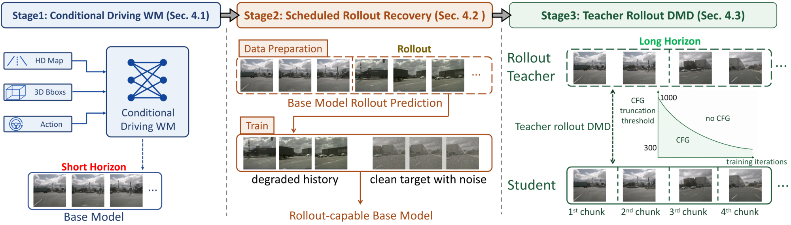

HorizonDrive
Self-Corrective Autoregressive World Model for Long-horizon Driving Simulation
Abstract
Closed-loop driving simulation requires real-time interaction beyond short offline clips, pushing current driving world models toward autoregressive (AR) rollout. Existing AR distillation approaches typically rely on frame sinks or student-side degradation training. The former transfers poorly to driving due to fast ego-motion and rapid scene changes, while the latter remains bounded by the teacher's single-pass output length and thus provides only a limited supervision horizon. A natural question is: can the teacher itself be extended via AR rollout to provide unbounded-horizon supervision at bounded memory cost? The key difficulty is that a standard teacher drifts under its own predictions, contaminating the supervision it provides. Our key insight is to make the teacher rollout-capable, ensuring reliable supervision from its own AR rollouts. This is instantiated as HorizonDrive, an anti-drifting training-and-distillation framework for AR driving simulation. First, scheduled rollout recovery (SRR) trains the base model to reconstruct ground-truth future clips from prediction-corrupted histories, yielding a teacher that remains stable across long AR rollouts. Second, the rollout-capable teacher is extended via AR rollout, providing long-horizon distribution-matching supervision under bounded memory, while a short-window student aligns to it with teacher rollout DMD (TRD) for efficient real-time deployment. HorizonDrive natively supports minute-scale AR rollout under bounded memory; on nuScenes, HorizonDrive reduces FID by 52% and FVD by 37%, and lowers ARE and DTW by 21% and 9% relative to the strongest long-horizon streaming baselines, while remaining competitive with single-pass driving video generators.
Method Overview

Overview of HorizonDrive framework. We first train a conditional driving world model, then improve its autoregressive stability through scheduled rollout recovery, and finally distill long-horizon teacher rollouts into a few-step, short-chunk student via teacher-rollout DMD.
Long-Horizon Video Comparison on nuScenes
Scaling to Diverse Driving Scenes in China
Minute-Level Video Generation
Closed-Loop Driving Simulation
Quantitative Results
nuScenes val
| Method | FID↓ | FVD↓ | Qual.↑ | Mot.↑ | Img.↑ | ARE↓ | DTW↓ |
|---|---|---|---|---|---|---|---|
| Long-horizon interactive world model frameworks | |||||||
| Matrix-Game3 | 35.69 | 338.22 | 78.99 | 93.78 | 60.44 | N/A | N/A |
| Helios | 30.53 | 218.23 | 79.02 | 95.03 | 58.82 | N/A | N/A |
| Causal-Forcing | 49.07 | 373.29 | 74.35 | 92.42 | 59.00 | N/A | N/A |
| HY-WorldPlay | 33.51 | 580.72 | 76.58 | 99.48 | 58.60 | N/A | N/A |
| LingBot-World | 37.67 | 325.55 | 77.08 | 92.87 | 55.55 | N/A | N/A |
| Long-horizon streaming methods (re-trained on our base model and data) | |||||||
| Self-Forcing | 41.53 | 161.00 | 79.27 | 94.17 | 59.65 | 3.47 | 6.22 |
| Self-Forcing++ | 28.84 | 147.57 | 79.47 | 93.92 | 60.25 | 3.78 | 3.61 |
| LongLive | 29.05 | 161.41 | 79.35 | 93.46 | 60.80 | 3.28 | 3.65 |
| HorizonDrive (Ours) | 13.82 | 92.99 | 79.53 | 93.85 | 62.50 | 2.60 | 3.27 |
Self-collected dataset
| Method | FID↓ | FVD↓ | Qual.↑ | Mot.↑ | Img.↑ | ARE↓ | DTW↓ |
|---|---|---|---|---|---|---|---|
| Long-horizon streaming methods (re-trained on our base model and e2e data) | |||||||
| Self-Forcing | 58.23 | 561.11 | 76.68 | 94.48 | 63.18 | 5.43 | 14.13 |
| Self-Forcing++ | 66.93 | 534.36 | 74.54 | 92.70 | 59.12 | 7.32 | 18.40 |
| LongLive | 28.39 | 374.94 | 78.18 | 94.57 | 62.53 | 4.05 | 8.11 |
| HorizonDrive (Ours) | 12.01 | 117.27 | 80.12 | 95.22 | 67.65 | 3.67 | 5.29 |
Citation
If you find our work useful, please cite it as:
@misc{zhang2026horizondriveselfcorrectiveautoregressiveworld,
title={HorizonDrive: Self-Corrective Autoregressive World Model for Long-horizon Driving Simulation},
author={Zhang, Conglang and Zhan, Yifan and Wang, Qingjie and Ouyang, Zhanpeng and Li, Yu and Yang, Zihao and Guo, Xiaoyang and Ren, Weiqiang and Zhang, Qian and Dong, Zhen and Zheng, Yinqiang and Yin, Wei and Chen, Zhengqing},
year={2026},
eprint={2605.11596},
archivePrefix={arXiv},
primaryClass={cs.CV},
url={https://arxiv.org/abs/2605.11596},
}